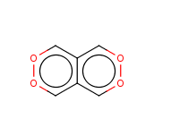
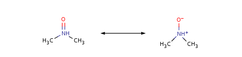

Valence Calculations
Introduction
The Valence Calculator has 3 functionality:
- calculate if there is valence error.
- set the appropriate amount of implicit hydrogen
The functionality of the Valence Calculator is focused mainly on
the organic compounds, although the inorganic compounds not
containing transition-metal atoms are also supported.
Molecules
1st Group
Hydrogen
- Default: H+
- Molecules:
- Neutral atoms:1 bond is accepted
- Charged atoms: Not allowed in molecules.
- Radical: Not allowed in molecules.
- Ions: H+, H-
- Radical:
- H· is accepted
- H without radical and charge or bond is not accepted.
Lithium (Li), Sodium (Na), Potassium (K), Rubidium (Rb), Caesium (Cs),
Francium (Fr)
- Default: Li, Na, K, Rb, Cs, Fr respectively.
- Molecules:
- Neutral atoms:1 bond is accepted.
- Charged atoms: Not allowed in molecules.
- Radical: Not allowed in molecules.
- Ions:
Li+, Na+, K+,
Rb+, Cs+, Fr+ are accepted.
- Radical: Me· is accepted
2nd Group
- Default: Be, Mg, Ca, Sr, Ba, Ra respectively.
- Molecules:
- Neutral atoms: 2 bonds are accepted.
- Charged atoms:
Each added charge decreases by one the number of possible
bonds.
- Radical: Each added radical decreases by one
the number of possible bonds
- Ions:
- Be2+, Mg2+, Ca2+,
Sr2+, Ba2+
Ra2+ are accepted
- Radicals: ·Me+ is accepted
13th Group
Boron
- Default: BH3
- Molecules:
- Neutral atoms:
- Implicit Hydrogens are added to have 3 four bonds.
- 4 bonds are accepted with 1 negative charge on the boron
atom.
- 5 or more bonds are forbidden.
- Charged atoms:
- Positive charge:
Every added charge
decreases by one the number of possible bonds.
Maximum charge accepted is +3.
- Negative charge:
BH4-,
BH32-
BH23-
BH4- and B5- are accepted.
- Radicals:
Every added radical on these atoms
decreases by one the number of necessary bonds.
- Aromatic compounds:
Boron may form aromatic bonds as well.
Aluminium (Al), Gallium (Ga), Indium (In), Thallium (Th)
- Default: Al, Ga, In, Th respectively.
- Molecules:
- Neutral Atoms: 3 bonds around these atoms are accepted.
- Charged atoms:
- Positive charge:
Every added charge
decreases by one the number of possible bonds.
Maximum charge accepted is +3.
- Negative charge:
4- charge with 4 ligands is accepted.
- Radicals:
Every added radical on these atoms
decreases by one the number of necessary bonds.
- Ions:
- Al+, Ga+, In+, Rb+,
Al3+, Ga3+, In3+,
Rb3+
are accepted.
- Radical: ·Me2+ and
·̣Me·
are allowed.
14th Group
Carbon (C), Silicon (Si), Germanium (Ge)
- Default:
CH4,
SiH4,
GeH4 respectively.
- Molecules:
- Neutral atoms
Implicit Hydrogens are added to have 4 four bonds.
5 or more bonds are forbidden.
- Charged atoms:
Every added charge on these atoms
(no matter it is positive or negative)
decreases by one the number of possible bonds.
Maximum charge accepted is ±4.
- Radical:
Every added radical on these atoms
decreases by one the number accepted of bonds.
General rules for aromatic compounds
(in order of priority):
- Since 5.10, the aromatic valence check is turned off.
- Every aromatic system which can be aromatized from its Kekule form
using one of our aromatization method is accepted.
- Atoms with aromatic bonds and
four or more ligands must have valence error.
- Carbon (C) atoms can add one electron to the aromatic system.
- Nitrogen (N) and Phophorus (P)
can add one (having two ligands) or two (having three ligands)
electrons to the aromatic system.
- Oxygen (O) and Sulfur (S) can add
two electrons to the aromatic system. Sulfur doesn't add electrons
to the aromatic systems, if it has 3 or more ligands
(except when the the third ligand is a double bonded oxygen).
- Boron (B) can add zero (having three ligands) or one
(having two ligands)
electron to the aromatic system.
- Charged atoms:
- C+ must act like B
- C- must act like N
- N- must act like O
- N+ must act like C
- P- must act like S
- P+ must act like C
- O+ must act like N
- O- must act like F
hence it should have valence error
- S+ must act like P
- S- must act like Cl
hence it should have valence error
- B+ must act like Be
hence it should have valence error
- B- must act like C
-
Given the form X=Y, where X is member of an aromatic ring
while Y is not and the electronegativity of atom Y is larger
than that of atom X
(that is, C=O, C=N, C=S, C=P, N=O and P=O).
Non ring double bond has so-called
"single bond charge separated" mesomer form.
Then the non-ring hetero atom, Y,
gets negative charge and the ring member atom,
X, gets positive and therefore they act as charged atoms
described above.
-
Ambiguous (in implicit H) aromatic ring cases:
- Explore the system of aromatic rings.
- Add the fixedly given electrons
(e.g non charged C, S ,O adds one electron;
N with 3 ligands adds two electrons).
- Add the ambiguous cases to get the maximum and minimum number
of aromatic electrons.
- Check the
Hückel rule.
- A group consist of atoms adding one electron to the aromatic
system must contain even number of atoms.
- Fulfill the Hückel rule in such a way to approach the case
when all ring member add one electron to the aromatic ring system.
- Note:This algorithm will consider as aromatic the
following type of molecules, although they aren't: consider a group
that consists of atoms giving one pi electron to the aromatic system
and contains even number of atoms. If the group can be split into
two part by cutting only one bond and the new groups contains odd
number of atoms, then the molecule is not aromatic.
Example: the molecule depicted below is considered as
aromatic although it isn't:

Tin (Sn)
- Default: Sn
- Molecules:
- Neutral atoms:
Implicit Hydrogens are added to have 4 four bonds
(if Tin has at least 1 bond).
5 or 6 bonds are also accepted.
- Charged atoms:
- Positive chearge:
Every added charge (no matter it is positive or negative)
decreases by one the number of possible bonds.
Maximum charge accepted is +4.
- Negative chearge: Not allowed.
- Radical:
Every added radical on these atoms
decreases by one the number accepted of bonds.
- Ions:
- Sn2+ and Sn4+ are accepted.
Lead (Pb)
- Default: Pb
- Molecules:
- Neutral atom:
- 1 or 2 bonds: 1 or 0 implicit hydrogen is added,
respectively.
- 3 or 4 bonds: 1 or 0 implicit hydrogen is added,
respectively.
- 5 or 6 bonds are accepted.
- More than 6 bonds are forbidden.
- Charged atom:
- Positive chearge:
Every added charge (no matter it is positive or negative)
decreases by one the number of possible bonds.
Maximum charge accepted is +4.
- Negative chearge: Not allowed.
- Radical:
Every added radical on these atoms
decreases by one the number accepted of bonds.
- Ions:
- Pb2+ and Pb4+ are accepted.
15th Group
Nitrogen (N)
- Default: NH3
- Molecules:
- Neutral atoms
- Implicit hydrogens are added to have 3 four bonds
(if nitrogen has at least 1 bond).
- More than 3 bonds are forbidden.
- If nitrogen has 4 ligands, charge is not set, hence
not accepted
- Pentavalent N is accepted in those molecules, that have
mesomer, where N is tetravalent:

- Charged atoms in a molecule:
- Positive charge:
- 1+: 4 bonds needed (incluing implicit hydrogens)
- 2+: 3 bonds needed (incluing implicit hydrogens)
- 3+: 2 bonds needed (incluing implicit hydrogens)
- 4+: 1 bonds needed (incluing implicit hydrogens)
- 5+: 0 bonds needed (incluing implicit hydrogens)
- 6+ or more: not allowed
- Negative charge: Every added negative charge
decreases by one the number of possible bonds.
Maximum charge accepted is -3.
- Radical:
Every added radical on these atoms
decreases by one the number of bonds.
Maximum three added radical is allowed.
- Aromatic compounds:
Nitrogen may form aromatic bonds
as well.
Phosphorus (P), Arsenic (As), Antimony (Sb), Bismuth (Bi)
- Default: PH3, AsH3,
SbH3, BiH3
- Molecules:
- Neutral atoms:
- 1 bond: 2 implicit Hydrogens are added.
- 2 bond: 1 implicit Hydrogen is added.
- 3 bond: 0 implicit Hydrogen is added.
- 4 bond: 1 implicit Hydrogen is added.
- 5 bond: 0 implicit Hydrogen is added.
- More than 5 bonds are forbidden
- Charged atoms in a molecule:
- Positive charge:
- 1+: 4 bonds are necessary (including implicit Hydrogens).
- 2+: 3 bond is necessary (including implicit Hydrogens).
- 3+: 2 bond is allowed.
- 4+: 1 bond is necessary (including implicit Hydrogens).
- 5+: 0 bond is allowed.
- 6+ or more: not allowed
- Negative charge: Every added negative charge
decreases by one the number of possible bonds.
Maximum charge accepted is -3.
- Radical:
Every added radical on these atoms
decreases by one the number of bonds.
Maximum three added radicals are allowed.
- Aromatic compounds:
Phosphorus may form aromatic bonds
as well.
16th Group
Oxygen (O)
- Default: H2O
- Molecules:
- Neutral atom:
- Implicit Hydrogens are added to have 2 bonds
(if Oxygen has at least 1 bond).
- More than 2 bonds are forbidden
- Charged atom:
- Positive charge:
- 1+: 3 bonds are necessary
(including implicit Hydrogens).
- 2+: 4 bonds are necessary
(including implicit Hydrogens).
- 3+: 3 bonds are necessary
(including implicit Hydrogens).
- 4+: 2 bonds are necessary
(including implicit Hydrogens).
- 5+: 1 bonds are necessary
(including implicit Hydrogens).
- 6+: 0 bonds are necessary
(including implicit Hydrogens).
- Negative charge:
One or two the negative charges are accepted,
with one or zero ligands, respectively.
- Radical:
Every added radical on these atoms
decreases by one the number of bonds.
Maximum two added radical is allowed.
- Aromatic compounds:
Oxygen may form aromatic bonds
as well.
Sulfur (S), Selenium (Se), Tellurium (Te), Polonium (Po)
- Default: H2S, H2Se,
H2Te, H2Po
- Molecules:
- Neutral atom:
- 1 bond: 1 implicit Hydrogen is added
- 2 bond: 0 implicit Hydrogen is added
- 3 bond: valence error on S/Se/Te/Po atom
- 4 bond: 0 implicit Hydrogen is added
- 5 bond: 1 implicit Hydrogen is added
- 6 bond: 0 implicit Hydrogen is added
- More than 6 bonds are forbidden
- Charged atom:
- Positive charge:
- 1+: 1, 3 or 5 bonds are necessary
(including implicit Hydrogens).
- 2+: 0 or 4 bonds are necessary
(including implicit Hydrogens).
- 3+: 1 or 3 bonds are necessary
(including implicit Hydrogens).
- 4+: 0 or 2 bonds are necessary
(including implicit Hydrogens).
- 5+: 1 bond is necessary
(including implicit Hydrogens).
- 6+: 0 bond is allowed.
- 7+ or more: not allowed.
- Negative charge:
- 1-: 1 bond accepted.
(Exception: 2 double bonded oxygens and
1 more ligand connected by a single bond)
- 2-: Zero ligand is accepted
- Radical: Every added radical on these atoms
decreases by one the number of bonds.
Maximum 2 added radical is allowed.
- Aromatic compounds:
Sulfur may form aromatic bonds
as well.
17th Group
- Default:HF, HCl, HBr, HI, HAt
- Molecules:
- Neutral atoms: 1 bond is allowed.
Exceptions:
- Interhalogen compounds
(both X and Y abbreviate a halogen atom):
- XY3, where X is heavier than Y;
- XY5, where X can be every halogen but F,
Y = F;
- IF7.
- Halogen oxoacids:
- HXOy, where X = Cl, Br, I or At; and
y = 2, 3 or 4.
- Charged atom:
- 1+: 2 bonds are necessary.
- Ions:
- F-, Cl-, Br-,
I-, At- are accepted.
- Radicals:
- 1 Radical with 0 bond around the halogen atom is accepted.
18th Group
- Default:He, Ne, Ar, Kr, Xe, Rd
- Molecules: 0 bond is accepted.
- Exceptions:
The following xenon compounds are accepted:
XeF2, XeF4, XeF6,
XeO3, XeO4
XeOF4, XeO2F2,
XeO3F2.
- Ions: 0 charge is accepted
- Radicals: 0 radical is accepted
Superatom S-Groups
S-group attachment points are considered as bonds. Three cases are possible:
- There is one S-group attachment point around the
investigated atom, that abbreviates one single bond;
- There are two S-group attachment points around the
investigated atom, both of them abbreviate one single bond;
- There is one S-group attachment point around the
investigated atom, that abbreviates one double bond.
When there is a valence error in an S-group,
Query Properties
If valence property is set, then the Valence Calculator uses that value,
v,
as the number of valence electron.
- Default: AHv
- Molecules:
- Neutral atoms: Maximum v bonds are accepted.
- Charged atoms:
Every added radical on these atoms
decreases by one the number of bonds.
- Neutral atoms:
Every added radical on these atoms
decreases by one the number of bonds.
- Ion: Maximum ±v charges are accepted.
- Radical: Maximum v radicals are accepted.
Other query properties are not handled by the valence calculator.
Special atoms
Special atoms are not handled by the valence calculator.